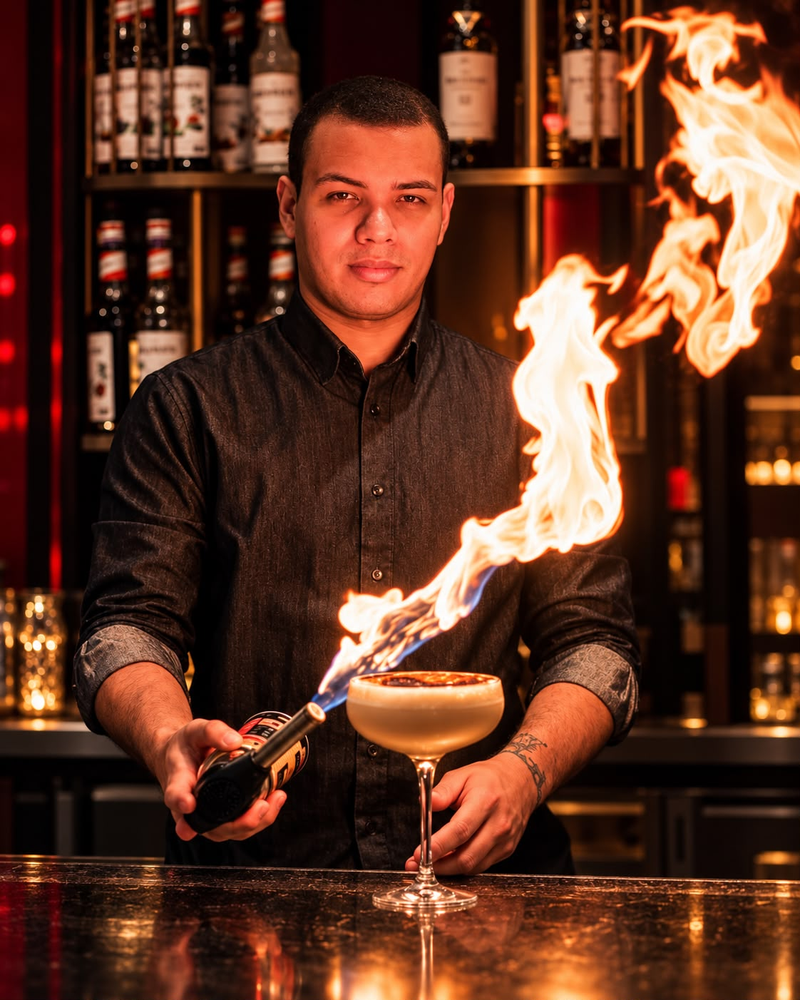
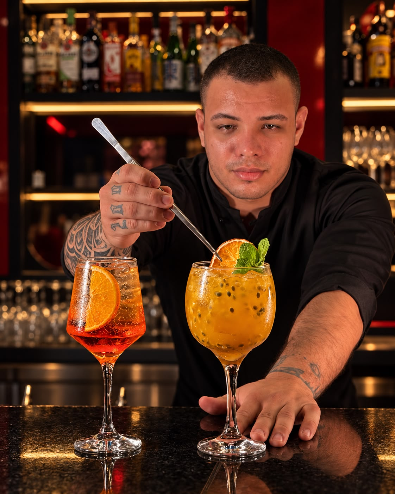
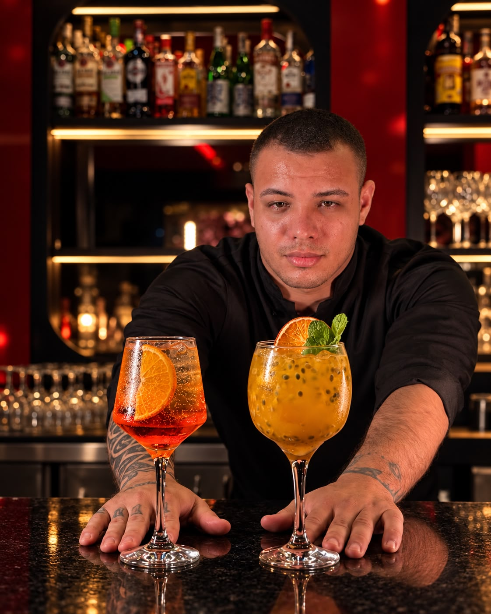
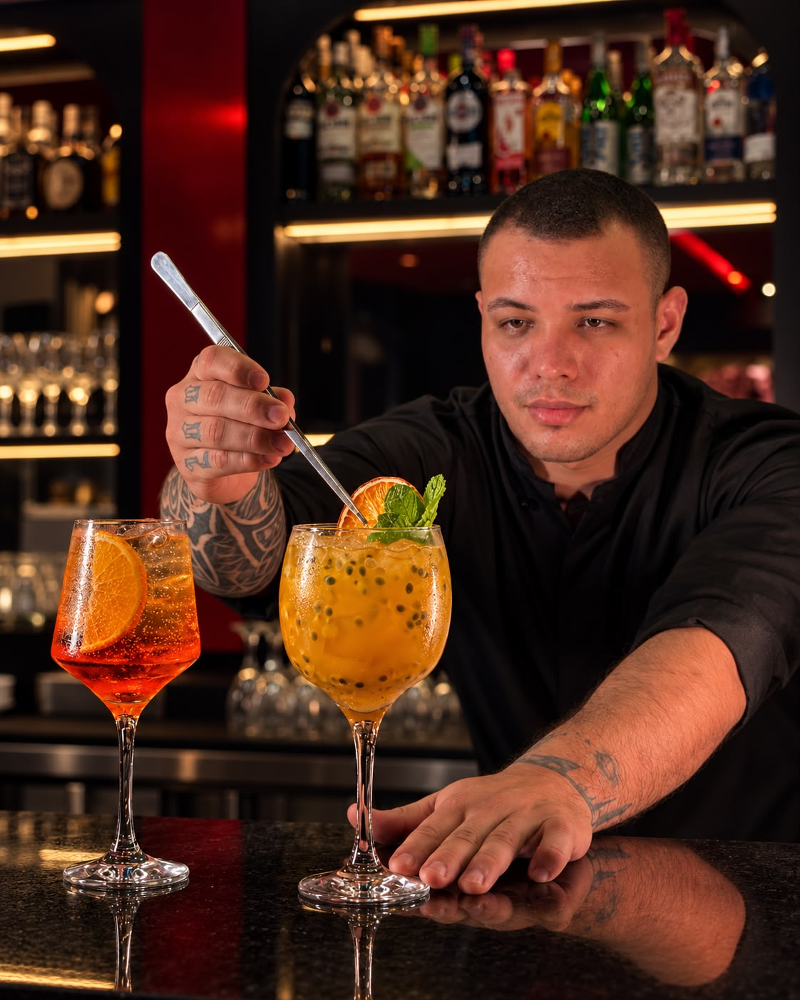

Eventos sociais
Experiências de bar e preparo de cocktails para celebrações e ocasiões especiais.

BARMAN • COQUETELARIA • EVENTOS
Victor Mendonça
Experiências de bar e coquetelaria para eventos em Foz do Iguaçu e região.
A ARTE POR TRÁS DO COPO
Victor Mendonça, da VM Eventos & Cocktails, apresenta um trabalho voltado a experiências de bar e coquetelaria para eventos, valorizando preparo, apresentação e atenção aos detalhes, seu trabalho busca transformar cada drink em parte da experiência do evento, unindo técnica, cuidado e uma apresentação sofisticada para tornar cada momento ainda mais especial.
Com atendimento em Foz do Iguaçu e região, o portfólio reúne registros profissionais do trabalho e dos cocktails preparados.
A trajetória, formação e demais informações profissionais poderão ser acrescentadas posteriormente, conforme os dados fornecidos pelo profissional.



PARA DIFERENTES OCASIÕES
Experiências de bar e preparo de cocktails para celebrações e ocasiões especiais.
Uma proposta de bar elegante para recepções, confraternizações e encontros.
Apresentação cuidadosa e preparo de drinks com foco na experiência dos convidados.
* Os serviços e formatos podem ser detalhados e atualizados conforme as informações do profissional.
COCKTAILS
Uma seleção de registros profissionais dos cocktails preparados pela VM Eventos & Cocktails. Os nomes e detalhes individuais dos drinks serão adicionados na segunda etapa do projeto.
Nomes, ingredientes e descrições dos drinks serão adicionados posteriormente.
VAMOS CONVERSAR
Entre em contato com Victor Mendonça para conversar sobre sua experiência de bar e coquetelaria em Foz do Iguaçu e região.